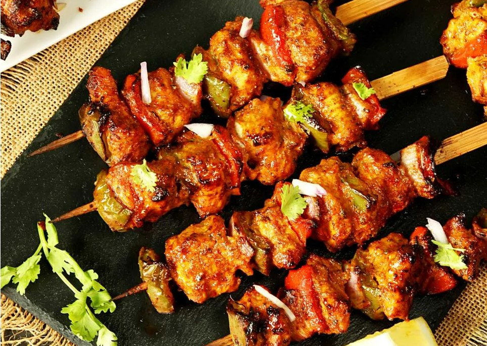
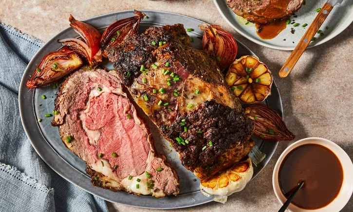
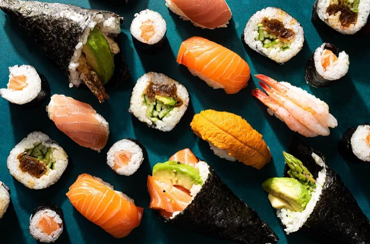

Chicken
Chicken dishes are diverse and popular around the world, celebrated for their versatility and ability to absorb flavors. These dishes highlight the adaptability of chicken, making it suitable for various cuisines and cooking methods.
Beef
Beef dishes are cherished globally for their rich flavors and versatility. These dishes showcase the range of flavors and cooking methods that can be achieved with beef, making it a beloved choice in many cultures.
Sushi
Sushi dishes are a hallmark of Japanese cuisine, celebrated for their fresh ingredients and artistic presentation. These dishes highlight the variety and creativity in sushi preparation, making it a beloved culinary art form worldwide.
